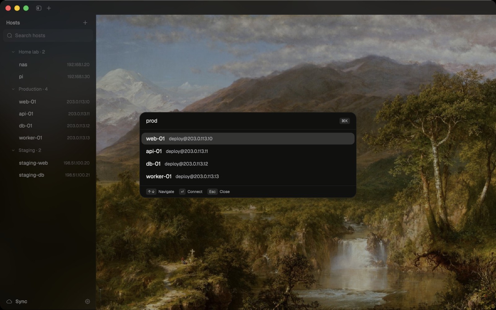
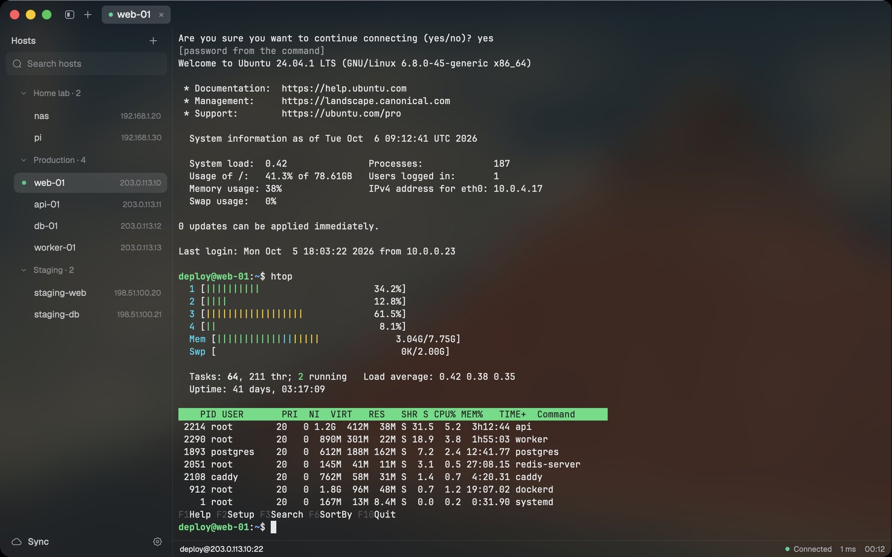
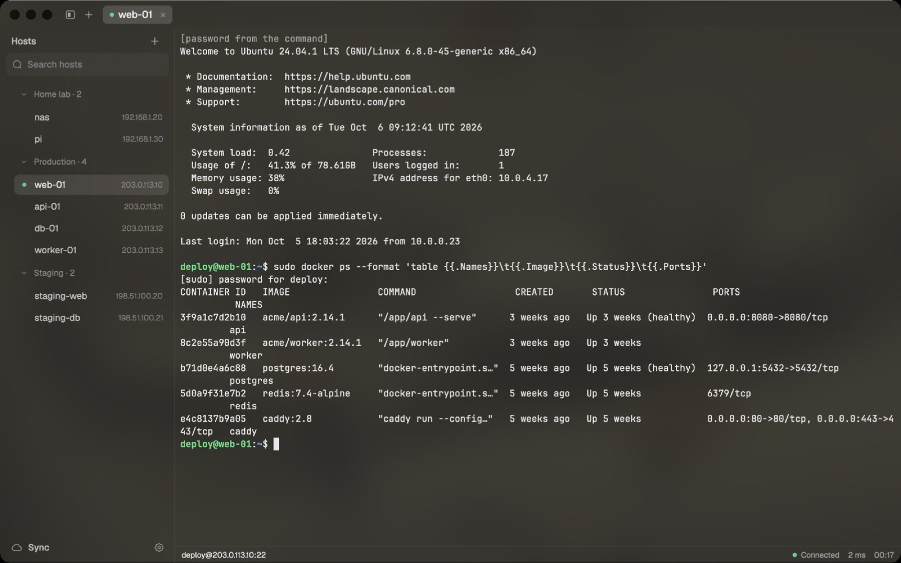
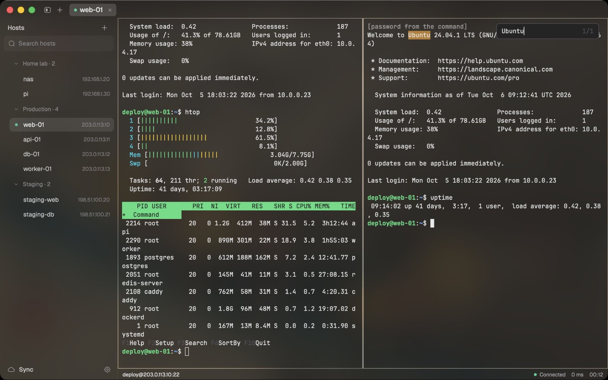
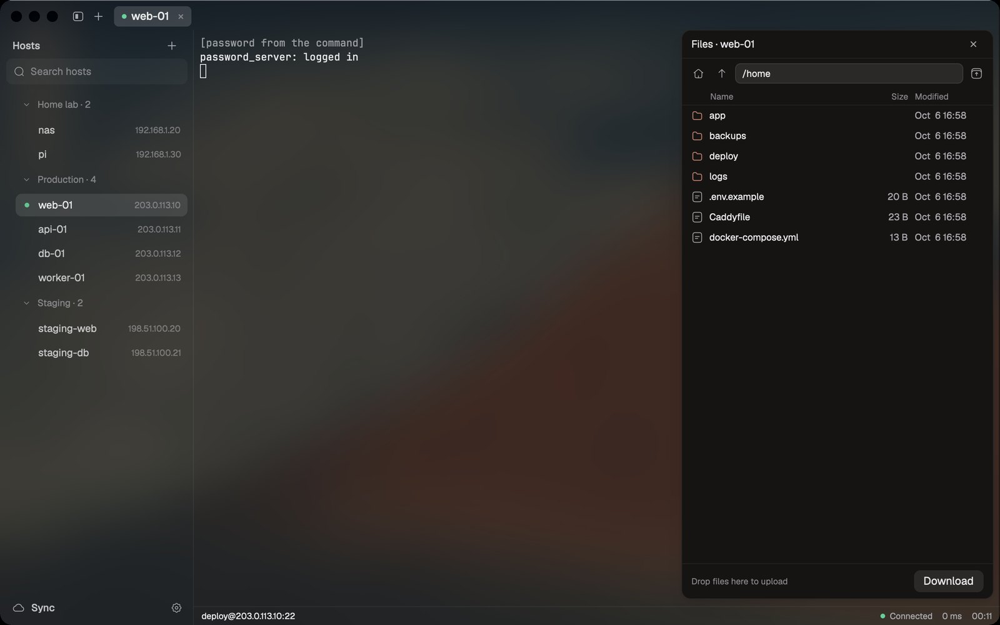
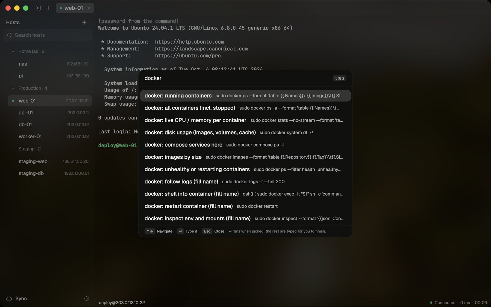
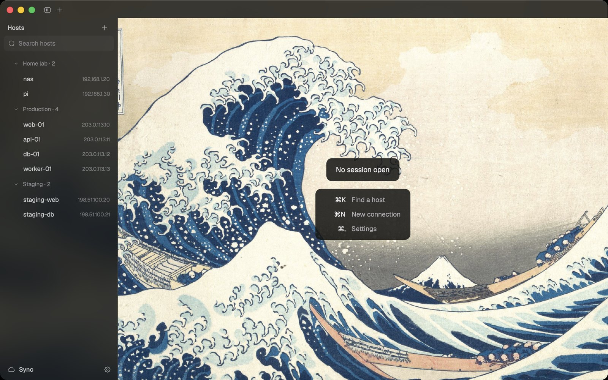
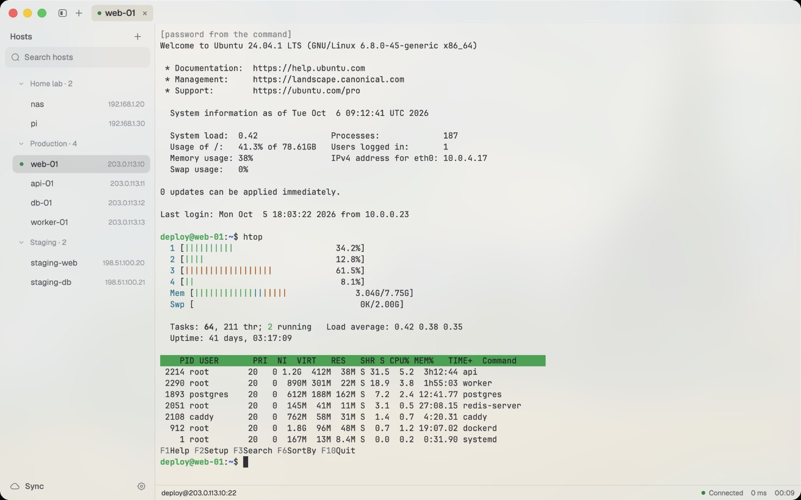
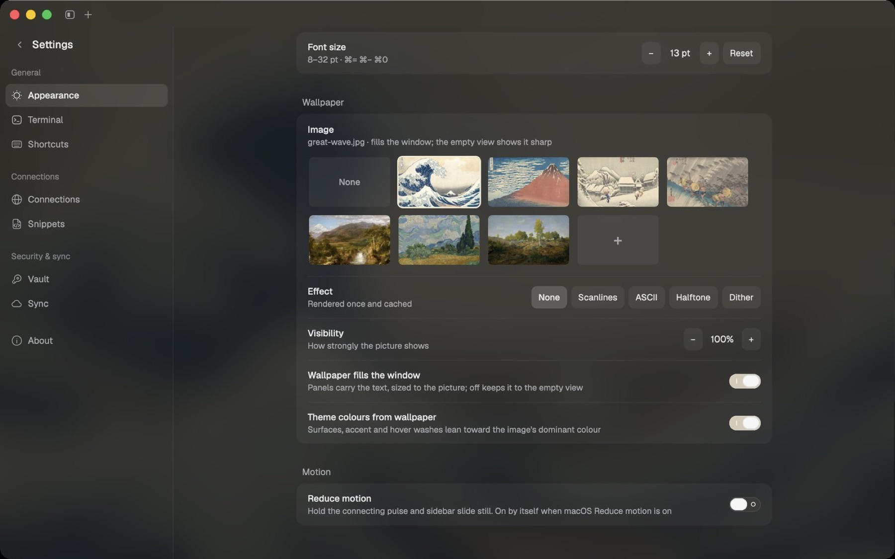

Your servers,
one click away.
A fast, native SSH client. Saved hosts, SFTP, splits and snippets, sudo passwords filled when you ask, and your setup synced, encrypted, to a Git repo you own.
For Apple silicon Macs, signed and notarised. Open source. v0.1.3 · How to install ›
Windows and Linux (preview): .zip · .tar.gz, x86-64.
Connect
One shortcut.
Any server.
Press ⌘K and type a few letters: tern finds the host, ordered by what you used last, and connects. Groups, tags, ProxyJump and port forwards are set once per host, and a dropped network reconnects on its own.


Passwords
Passwords stay
where they are.
Logins come from your SSH key, your password manager (any command, like op read … or pass show …), or tern's encrypted vault. At a sudo prompt, press ⌘\ (Ctrl+Shift+\ on Windows and Linux) and tern types it. Never on its own.

Real work
Everything a
long session needs.
Split panes and find in scrollback, an SFTP panel to browse and drop files, snippets for the commands you run every day, broadcast input to chosen tabs, and session logs.



Memory
76 MB.
Not 580.
One native process, no browser engine. Connected to the same server, tern settles at 76 MB where Tabby takes 580. Measured with macOS footprint; the method and raw samples are in the repo.
Connected, settled at two minutes
Sync
Your setup,
in your own repo.
Hosts, snippets and settings sync to a private Git repository you own, encrypted with your vault passphrase before they leave your computer. No account, no subscription.
Make it yours
Your wallpaper.
Your colours.
Seven public-domain artworks built in, or any image. The window takes its colours from it and keeps every line readable, in light, dark or following your system. Any monospace font, any of 725 terminal themes.



Download tern.
macOS builds are signed with a Developer ID and notarised by Apple. Windows and Linux builds are previews: they pass CI on every change but haven't been run on a real desktop yet, so reports are welcome.